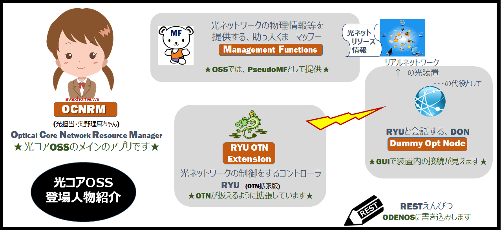
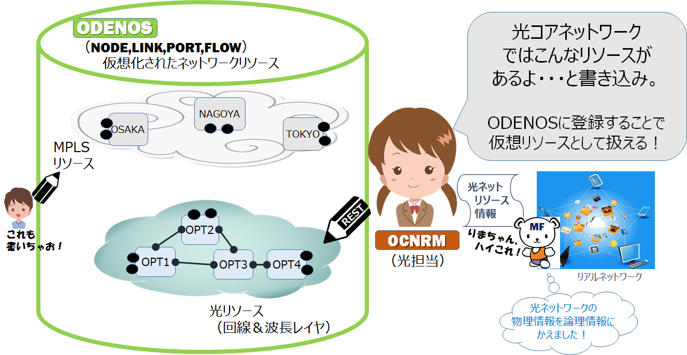
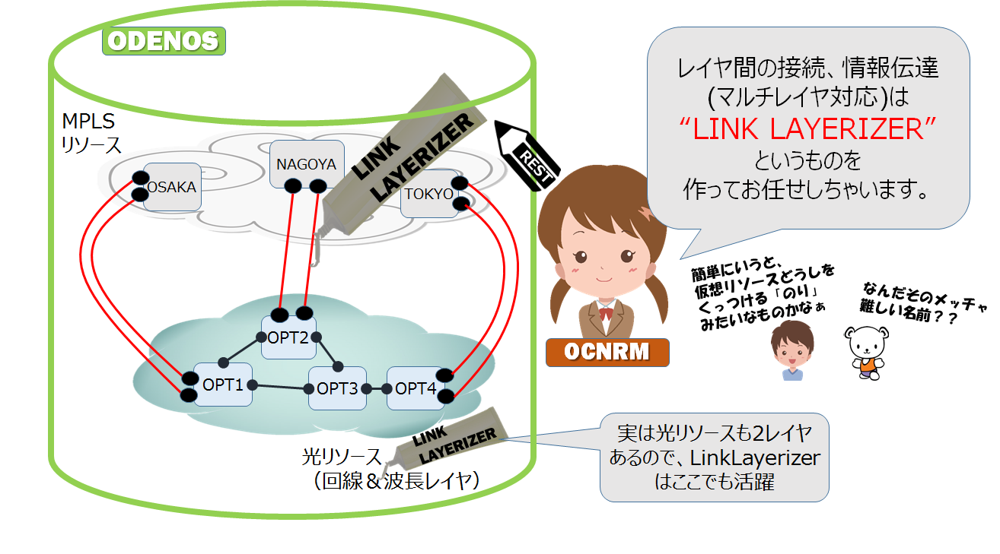
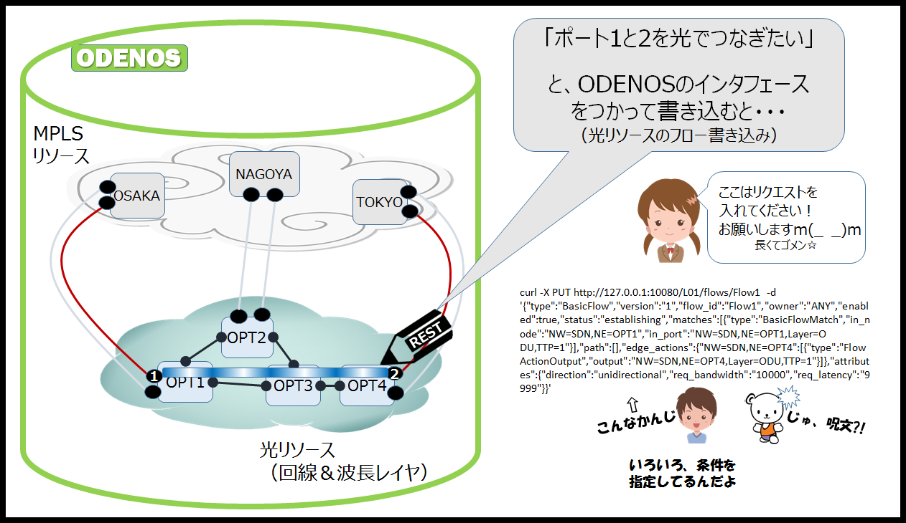
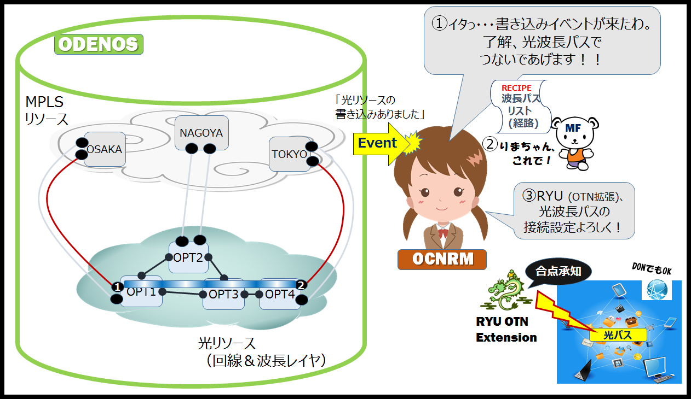
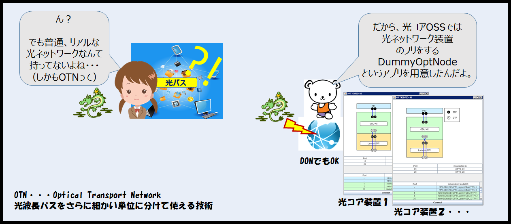
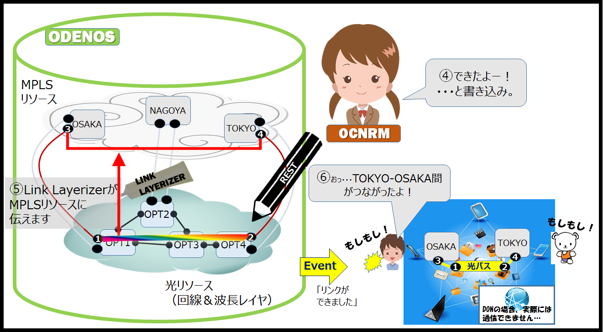
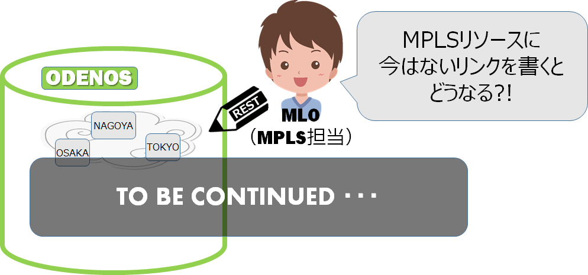

光コアネットワークSDN[OSS公開版]概説 -- 基本編 【光コアOSSで何ができるの？】  ODENOSについてはこちら ①光コアネットワークリソースを、仮想化して扱えるようにします。  ②マルチレイヤの取り扱いができます。  ③ダイナミックに光(品質の高いネットワーク)でつなぐことができます。     さらに詳細な説明資料はこちらをご覧ください 光コアネットワークSDN[OSS公開版]概説 -- 応用編 ④マルチレイヤの連携制御が可能になります。 